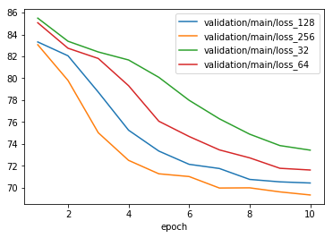
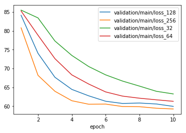
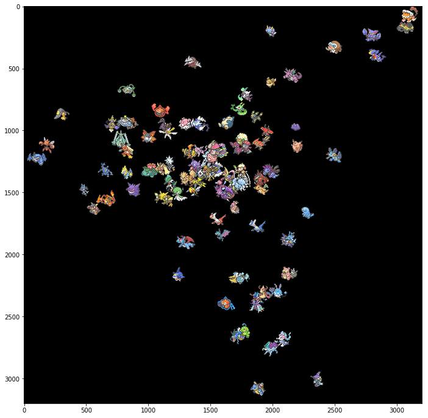
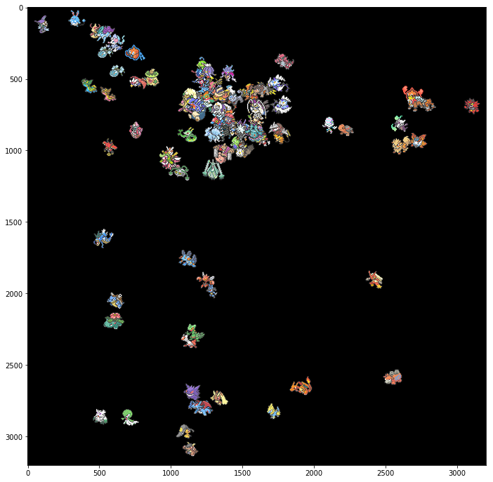

【poke2vec】word2vecをポケモンのパーティに適用してみた
最近の自然言語処理の技術にword2vecと呼ばれるものがあります。word2vecは文字通り単語をベクトルに変換する技術のことで、これを用いることで単語同士の足し算や引き算を計算できます。
これを使うと例えば、「王」+「女」-「男」から「女王」を導くことができます。
今回この単語同士の足し算や引き算をする代わりにポケモン同士の足し算や引き算ができないかと実験してみました。
学習に使用したコードは全て odanado/poke2vec にあります。
word2vec
最初にword2vecについて簡単に触れます。
いきなりですが単語の意味とはなんでしょうか？多くの人は辞書を引いてそこに書いてあることを単語の意味とするかもしれません。
一方で自然言語処理では、単語の意味は前後の文脈から決定されるという考え方をすることもあります。
今「林檎」という単語の意味を考えます。例えば「食べる」という動詞と共に出現することが多いと、「林檎」は食べ物の一種ではないか？と考えることができます。他にも「バナナ」、「メロン」など果物と共に出現することが多いと、果物の一種ではないか？と考えることができます。
word2vecはこの考え方を元に、単語の意味を表すベクトルを周辺単語から学習する手法です。
poke2vec
上で紹介した単語の意味の考え方を元に、あるポケモンの役割(意味)とは、種族値、タイプ、覚える技などの辞書的なものではなく、どんなポケモンと同時にパーティに使用されたかによって決定されるのではないかと考えました。
そこで今回、ポケモンのパーティを文、ポケモンを単語と見なして、word2vecのモデルの1つであるContinuous Bag-of-Words (CBoW) を適用してみました。より具体的には、6匹のパーティのうち5匹を入力として、残り1匹を推定する分類問題として学習します。
これにより、ポケモンの役割を表すベクトルを学習されることが期待でき、ベクトルの足し算引き算によってパーティ構築の手助けを出来ればと考えています。
データセットの構築
実験ではPokémon Showdownの順位表からレーティング上位500人の対戦ログを収集し、そこで使用されたパーティの情報をデータセットとして用いました。Pokémon Showdownはオンライン上のポケモン対戦シミュレータのことで、日々人間同士のポケモン対戦が行われています。クリーニングしたデータをpoke2vecのリポジトリで公開予定です。
収集したデータのルールは、シングルバトルとVGC2018[1]の2つです。
対戦ログはシングルバトルは4,260件、VGC2018は14,405件収集することができました。
その後クリーニングを行った後の各ルールでの収集したパーティ数は下の表のとおりです。
重複ありは、パーティの重複を許した件数です。パーティが6匹未満のものや中身が空な対戦ログを除去したため、件数が少し減っています。
重複なしは、同じパーティの並びを除去したものです。自然言語の文と異なり、ポケモンのパーティにおいてポケモンの並び方に意味はないので、異なる並びで同じポケモンから構成されているパーティは同一視しています。
| シングルバトル | VGC2018 | |
|---|---|---|
| 重複あり | 8,334 | 28,730 |
| 重複なし | 5,010 | 7,707 |
データセットの分析
データセットの分析を行いました。各数値は下の表のとおりです。
ポケモンの種類は、収集したパーティに含まれるポケモンの種類です。ウルトラサンムーンが発売された今では800匹を超える種類のポケモンがいます。
上位100匹の全体の割合は、使用頻度が上位のポケモンが全体のどれだけを占めているのかを表しています。2割ちょっとのポケモン達が全体の9割を占めているので、偏りが激しいことがわかります。
| シングルバトル | VGC2018 | |
|---|---|---|
| ポケモンの種類 | 500 | 433 |
| 上位100匹の全体の割合 | 89.2% | 92.7% |
実験設定
データセットの1割を評価セット、残りを訓練セットとして使用しました。
上位100匹以外のポケモンは、未知ポケモンを表す <unk> で置換し、ポケモンと整数の対応表を構築しました。
モデルにはCBoW、損失関数には負例サンプリング (窓サイズ5) を使用しました。その実装にはchainerのexamplesにあるword2vecのコードを用いました。
CBoWの中間層は32,64,128,256次元を試し、評価セットのロスが最も小さいものを選びました。
学習は10epoch回しました。
実験結果
学習曲線
評価セットのロスの変化を下の図に示します。
 
図からわかるようにどちらも中間層が256次元の設定が、評価セットのロスが最も小さくなりました。
ベクトルの可視化
Principal Component Analysis (PCA) を用いて256次元のベクトルを2次元に圧縮し、各点にポケモンのアイコンを表示する散布図を作成しました。上がシングルバトル、下がVGC2018です。
 
どちらの図もどこか1点にポケモンが集中しており、少し離れたところに水タイプのポケモンが集まっているのがわかります(シングルバトルだと下の方、VGC2018だと左上)。また、シングルバトルでは右上に地面タイプのポケモンが集まっているのに対して、VGC2018にはそのような傾向は見られません。反対に、VGC2018では右上に炎タイプのポケモンが集まっていますが、シングルバトルではその傾向はありません。
僕はあまり対戦には詳しくないので、どなたか面白い考察をしてくださる方を募集しています。
ポケモン同士の足し算引き算
VGC2018のポケモンベクトルで、ポケモン同士の足し算引き算をしてみました。設定は次の通りです。
1 | 「ボルトロス(霊獣)」+「サンダー」-「ライボルト」 |
類似度トップ5は以下のようになりました。
| ポケモン | 類似度 |
|---|---|
| ボルトロス(化身) | 0.71 |
| カプ・コケコ | 0.54 |
| デンジュモク | 0.51 |
| ロトム(ヒート) | 0.44 |
| アーゴヨン | 0.43 |
5匹中4匹が同じ電気タイプのポケモンでした。役割的に同じポケモンを選ぼうとするとタイプがかぶりやすいのかもしれません。
これまた僕が対戦に詳しくないために、これ以上コメントすることができません…。詳しい方がいたら教えて欲しいです。
また、他の組み合わせでも足し算や引き算をした結果を知りたい方はTwitterで聞いて下さい。お答えします。
まとめ
- 単語の意味ベクトルを学習する方法であるCBoWを用いて、ポケモンの役割(意味)ベクトルを学習しようと試みました。
- 学習データはPokémon Showdownからレーティング上位500人の対戦ログから収集しました。
- 学習したポケモンベクトルをPCAで圧縮し可視化すると、タイプが同じポケモンが集まっていることが確認できました。
- ポケモン同士の演算を行った結果、同じタイプのポケモンが多く上位にヒットし、近い役割のポケモンがピックアップ出来ていると考えることができました。
今後の展望
- 可視化やポケモン同士の演算を自由に行えるWebサイトを作り、多くの人からのフィードバックを受けたいです。
- 1.2018年公式ルールのダブルバトルのこと ↩